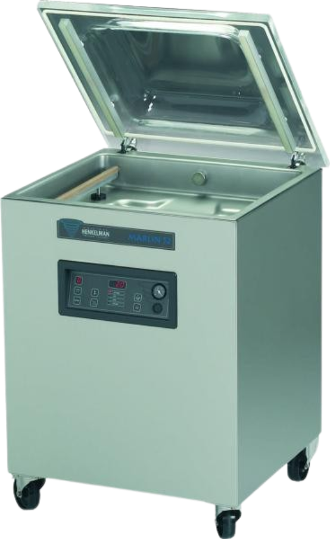
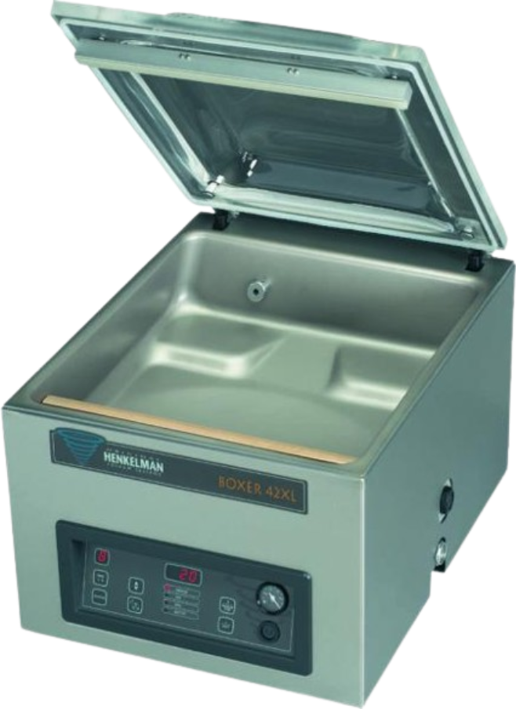
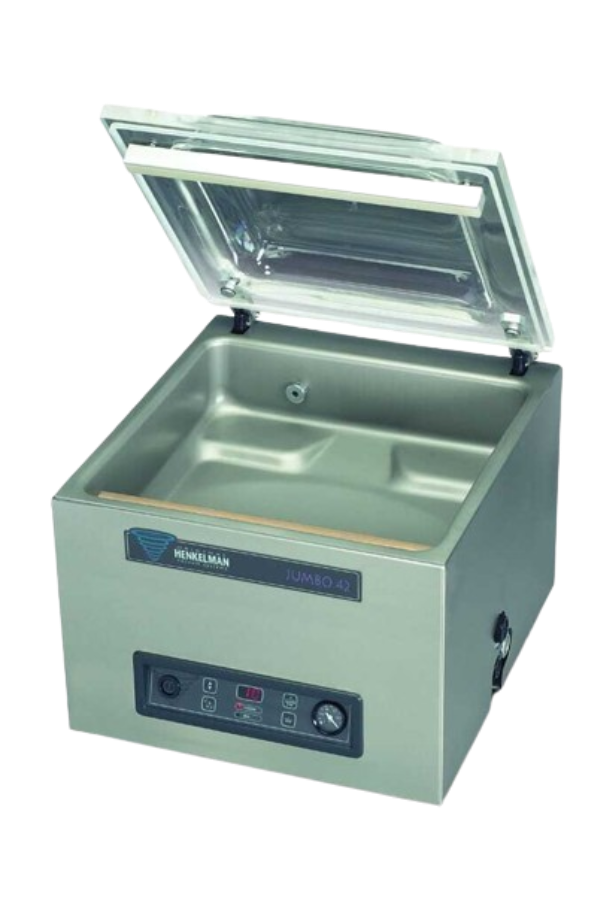
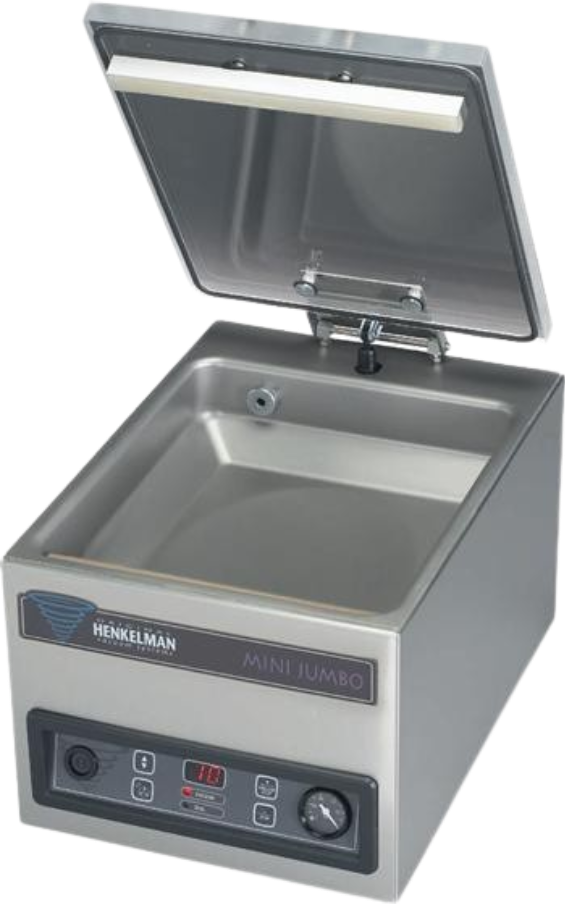
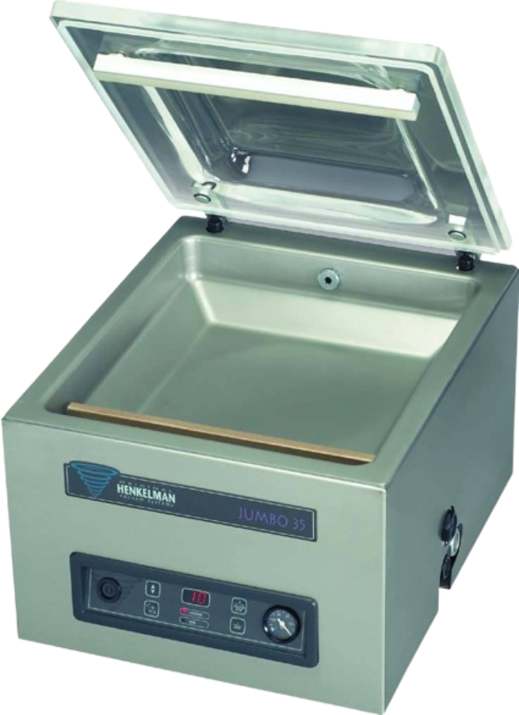

Vaakumpakendaja
Kambriga vaakumpakendajad
Garantii tippklassist Henkelman masinatele 3 aastat!
Hinnad ei sisalda käibemaksu.
HENKELMAN MARLIN 52

Põrandamudel
Roostevabast terasest
Väga hea hügieenitase
Läbipaistev kambrikaas
Lihtsalt eemaldatavad juhtmevabad keevistalad (2tk)
Kambri täiteplaadid komplektis
Vaakumpump 63
Masina töötsükli kiirus 15-40 s
Mõõdud 700 x 690 x 1030 mm
Kambri mõõdud 500 x 520 x 200 h mm
Pinge 400V-3-50 Hz
Võimsus 3,5 kW
HENKELMAN BOXER 42 XL

Lauamudel
Roostevabast terasest
Väga hea hügieenitase
Läbipaistev kambrikaas
Lihtsalt eemaldatavad keevistalad
Kambri täiteplaadid komplektis (võimalik kahepoolne keevitus 42 XL Bi-active mudel)
Vaakumpump 21 m3/h
Masina töötsükli kiirus 20-40 s
Mõõdud 490 x 610 x 445 mm
Kambri mõõdud 420 x 460 x 180 h mm
Pinge 230V-1-50 Hz
Võimsus 1,0 kW
HENKELMAN JUMBO 42

Lauamudel
Roostevabast terasest
Väga hea hügieenitase
Läbipaistev kambrikaas
Lihtsalt eemaldatavad keevistalad
Kambri täiteplaadid komplektis
Vaakumpump 16 m3/h
Masina töötsükli kiirus 20-40 s
Mõõdud 490 x 525 x 430 mm
Kambri mõõdud 420 x 370 x 180 h mm
Pinge 230V-1-50 Hz
Võimsus 0,75 kW
HENKELMAN MINI JUMBO

MINI JUMBO on populaarseim mudel restoranidele ja suurköökidele. Masin on varustatud digitaalse juhtpaneeliga.
Vaakummasin on ehitatud täielikult roostevabast terasest. Juhtmevabad keevistalad on lihtsalt eemaldatavad puhastamisel.
Pikkus: 450 mm
Laius: 330 mm
Kõrgus: 295 mm
Kaal: 25.0 kg
Kambri mõõdud 310 x 280 x 85 h mm (kuppelkaanega kambri kõrgus 130 mm)
Vaakumpump 4 m3/h
Pinge 230V-1-50 Hz
Võimsus 0,3 kW
HENKELMAN JUMBO 30

Lauamudel
Roostevabast terasest
Väga hea hügieenitase
Läbipaistev kambrikaas
Lihtsalt eemaldatavad keevistalad
Kambri täiteplaadid komplektis
Vaakumpump 8 m3/h
Masina töötsükli kiirus 15-30 s
Mõõdud 450 x 525 x 385 mm
Kambri mõõdud 350 x 370 x 150 h mm
Pinge 230V-1-50 Hz
Võimsus 0,55 kW